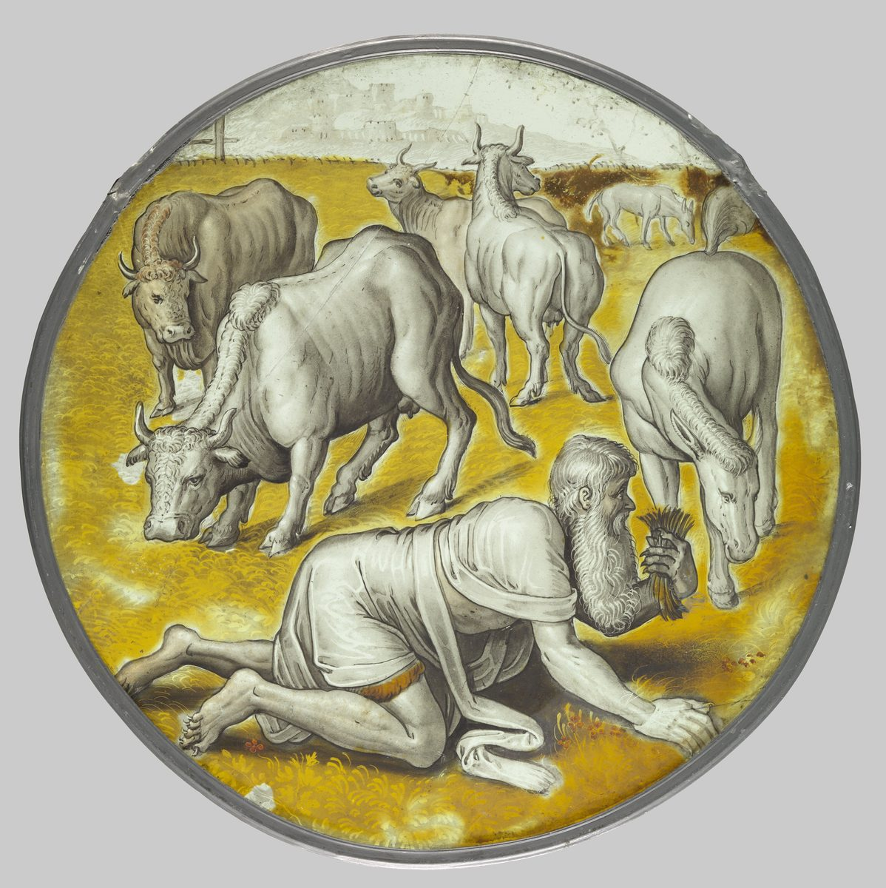

Daniel 4 — The Mister Translation

Daniel 4:30: “he was driven from humankind, and he ate grass like oxen … until his hair grew like the eagles’, and his nails like the birds’.” The museum describes the king as gone mad, his crown lost, crawling across the field to eat grass among the cows and horses, his nails grown long. A roundel like this was made for a window, to be seen against the light.

Translator's Notes — verse by verse
Where this chapter begins. The Aramaic text numbers this chapter from “I, Nebuchadnezzar, was at ease in my house.” English Bibles print three verses before it, the king’s proclamation “to all peoples, nations, and languages,” as 4:1–3; the Aramaic closes chapter 3 with those three lines, and on these pages they stand there, as Daniel 3:31–33. Every verse below carries its English number beside it, so verse 1 here is 4:4 in an English Bible, and verse 34 is 4:37.
A king’s letter, in his own voice. The proclamation that ends chapter 3 is the heading of this one: what follows is Nebuchadnezzar’s account of “the signs and wonders that the Most High God has done for me” (3:32), told in the first person, by the king who burned Jerusalem. He tells it as a man looking back. He knows how it ends before he starts.
At ease, and flourishing. “At ease” is shleh, untroubled; the same root comes back as the last word of Daniel’s advice in v24, “a lengthening of your ease.” “Flourishing” is ra‘nan, the Aramaic twin of the Hebrew word for a green, luxuriant tree: the “luxuriant native tree” of Psalm 37:35 and the “leafy tree” of Deuteronomy 12:2. The king describes himself in tree words before he dreams of a tree. The ASV has “was at rest in my house, and flourishing in my palace”; the NWT 1984 “happened to be at ease in my house”; the NIV “contented and prosperous”; the TLB “living in peace and prosperity”.
Imaginings upon the bed. Harhorin, “imaginings,” stands in one verse of the Hebrew Bible; in later Jewish Aramaic the word means fancies and stray thoughts. The KJV has “the thoughts upon my bed”; the NWT 1984 “mental images upon my bed”; the NIV “the images and visions that passed through my mind”. “Terrified” is bhl, the verb that will take hold of Daniel himself in v16.
The Greek gives it a date. The Old Greek translation of Daniel opens this chapter “In the eighteenth year of the reign of Nebuchadnezzar,” the year the siege of Jerusalem was under way (Jeremiah 32:1). The Aramaic gives no year, and neither does the Greek version of Theodotion, the Greek text that the churches came to read in place of the Old Greek.
The same four, failing again. “The magicians, the enchanters, the Chaldeans, and the diviners” are the court’s experts of chapter 2, each called by the word chapter 2 used (2:10, 2:27). In chapter 2 they could not tell the king a dream he refused to describe. This time he describes it, and they still cannot say what it means. “Magicians” is chartummin, the word Genesis uses for Pharaoh’s dream-experts; Daniel has the title “chief of the magicians” from the king’s own mouth.
“After the name of my god.” The king explains the name Belteshazzar, which the chief official gave Daniel at 1:7. The name is usually taken as a Babylonian prayer, “Bel, protect his life,” and Bel was the title of Marduk, the god of Babylon; that is why Nebuchadnezzar can hear his own god in it. He speaks of “my god” in the same sentence in which he says the spirit of “the holy gods” is in Daniel. The narrator lets both stand.
The spirit of the holy gods. Ruach elahin qaddishin: both the noun and the adjective are plural, as in the king’s “a son of the gods” at 3:25. This is a pagan king speaking. The KJV, ASV and NIV print “the spirit of the holy gods,” and the Geneva has “which hath the spirit of the holy gods in him”. This translation keeps the plural all three times (vv5, 6, 15).
No mystery too hard. “No mystery is too hard for you”: the mystery is raz, the theme word of chapter 2, and the verb is anes, to press or overpower; no secret gets the better of him. The KJV has “no secret troubleth thee”; the NIV “no mystery is too difficult for you”; the Douay “no secret is impossible to thee”. Then the king asks for something odd: “tell me the visions of my dream that I have seen, and its interpretation,” and in the next verse tells the visions himself. The NIV rearranges it: “Here is my dream; interpret it for me.” The KJV keeps the Aramaic order, “tell me the visions of my dream that I have seen”. This translation keeps it too, so the reader hears chapter 2’s demand, tell me the dream, one more time, softened into a request.
Daniel comes in last. “And at last” is ve-‘ad ochoren. The book does not say why the chief of the magicians was not called first. The Douay makes him one of the group: “Till their colleague Daniel came in before me”.
The tree. Ilan is the ordinary Aramaic word for a tree. As a tree it stands in six verses of the Hebrew Bible, all in this chapter (the same letters spell the name Elon at Genesis 26:34). This tree stands “in the middle of the earth,” grows until “its height reached to the heavens,” and “could be seen to the end of all the earth.” A king of Babylon is dreaming of something whose top reaches heaven; Genesis set the first Babel’s builders the same goal, “a tower with its top in the sky” (Genesis 11:4), in other words and another language.
Shelter for everything. “Under it the beasts of the field found shade, and in its branches the birds of the heavens dwelt, and from it all flesh was fed.” The beasts of the field and the birds of the heavens are the pair Daniel named at 2:38: God “has given into your hand” wherever they live. The tree is that sentence turned into a picture. The KJV has “the beasts of the field had shadow under it”; the NWT 1984 “Under it the beast of the field would seek shade”; the NIV “Under it the wild animals found shelter”.
A picture other books use for empires. A great tree with birds in its boughs and animals beneath is how Ezekiel draws Assyria as a cedar of Lebanon (Ezekiel 31:6). Jesus’ mustard seed grows into a tree “so that the birds of the sky come and nest in its branches” (Matthew 13:32; its note is there). Matthew’s Greek is close to the Greek of this chapter: Theodotion’s version of v18 has “in its branches the birds of the heaven settled,” with Matthew’s verb, kataskēnoō, and Matthew’s “in its branches.” Matthew’s “the birds of the sky” is the Old Greek’s wording at v9.
The Old Greek’s larger tree. The Old Greek makes the tree bigger still: its branches are “about thirty stadia” long, and “the sun and the moon lived in it.” Neither detail is in the Aramaic. Theodotion’s Greek keeps to the Aramaic.
A watcher. The word is ‘ir, from the verb ‘ur, to be awake: one who does not sleep. In this sense it stands in three verses of the Hebrew Bible, all in this chapter (vv10, 14, 20); the same letters in Hebrew spell ‘ir, “city,” a different word. The KJV has “a watcher and an holy one”; the NWT 1984 “a watcher, even a holy one”; the Geneva “a watchman and an holy one”; the NIV turns it into a messenger, “a holy one, a messenger”; the TLB “one of God’s angels”.
What the Greek did with it. The Old Greek says “an angel.” Theodotion did not translate the word at all; his Greek prints the Aramaic sound, ir, in all three verses. Later Jewish writing made “the Watchers” a famous name for angels, above all the fallen ones of the Book of Enoch (reported here, not checked against those texts).
One figure or two? “A watcher, a holy one”: the Aramaic joins them with and, which can add a second being or explain the first. The verbs settle it here: “he cried aloud” (v11) and, in v20, “coming down… and saying” are singular, so one figure is meant, named twice. In v14 the plural pairs, “the watchers” and “the holy ones,” name the council he speaks for. This translation prints one figure.
The stump in a band of iron and bronze. The tree is cut down, but its stump is left “with a band of iron and bronze.” The text does not say whether the band keeps the stump from splitting, which would be a promise, or holds the man down, which would be part of the sentence. Both readings are old. This translation prints the band and leaves the question open.
When the tree becomes a man. The Aramaic uses one masculine pronoun, “he” or “it,” the whole way through, because ilan is masculine. An English translation has to decide where the tree stops and the king begins. The ASV keeps “it” for the stump and the dew and changes to the man at “let his portion be with the beasts in the grass of the earth”; this translation does the same. The NIV changes earlier: “Let him be drenched with the dew of heaven”. The NWT 1984 keeps the tree to the end of v13: “Let its heart be changed from that of mankind”. In v13 a heart is changed, so the dream is no longer about wood.
A beast’s heart. Levav is the seat of thought, so a beast’s heart is a beast’s mind; the NIV has “Let his mind be changed from that of a man”. This translation keeps “heart,” because v31 says what comes back when the sentence ends: his understanding.
Seven times. ‘Iddan is a set period, with no length given. “Seven times” stands in four verses of the Hebrew Bible (vv13, 20, 22, 29). The Old Greek says “seven years,” and so does Josephus: the king lived with the beasts “seven years” in the wilderness (Antiquities 10.216, numbered 10.10.6 in Whiston). Theodotion keeps “seven times.” The TLB has “For seven years let him have the mind of an animal”; the KJV “let seven times pass over him”. The same word returns in Daniel 7:25, “a time, times, and half a time”.
The decree, and its purpose. “The matter is by the decree of the watchers, and the decision by the word of the holy ones”: the decision is she’elta, literally the question put, the matter asked and ruled on. In v21 Daniel calls the same sentence “the decree of the Most High.” The text sees no conflict: the council’s ruling is God’s. Its purpose is the chapter’s refrain, said three times (vv14, 22, 29): “the Most High rules over the kingdom of humankind, and gives it to whomever he wills.” Here it adds, “and sets over it the lowliest of human beings.” The KJV has “the basest of men”; the ASV “the lowest of men”; the NWT 1984 “even the lowliest one of mankind”. “Lowliest” is shefal; its verb ends the chapter (v34), “those who walk in pride he is able to bring low.”
The voice changes. Up to v15 the king tells the story as “I.” From v16 the story speaks of “Daniel” and “the king” in the third person, and “I” does not return until v31, when the king’s understanding comes back. Some readers take this as a narrator’s frame around a royal letter; others see a deliberate effect: the king cannot tell the part of the story in which he was not himself. The text does not explain it.
Appalled. Eshtomam is from the root of desolation, shmm: the root of “the abomination that desolates” in 11:31, and of Daniel’s own “I was appalled” after a later vision (8:27). The ASV has “was stricken dumb for a while”; the KJV “was astonied for one hour”; the NWT 1984 “was astonished for a moment”; the NIV “was greatly perplexed for a time”.
An hour, or a moment. Ke-sha‘ah chadah, “for about one sha‘ah.” In Daniel’s Aramaic sha‘ah is a short span, not sixty minutes; the same word makes “at that very hour” in the king’s threat at 3:6 and in v30 below. This translation has “for a moment” here, and keeps “that very hour” where the phrase is a formula.
A wish for the king. “My lord, may the dream be for those who hate you, and its interpretation for your enemies!” The man who interprets the dream wishes it had been sent to somebody else. The captive from Jerusalem does not gloat over the king who took him. The NIV turns it into a wish, “if only the dream applied to your enemies”; the KJV has “the dream be to them that hate thee”. The Old Greek has Daniel answer “in a gentle voice.”
Told again, almost word for word. Daniel repeats the dream before he explains it, as chapter 3 repeated its list of officials and instruments (the note there); the repetition is how these court stories are told. Then: “it is you, O king.” Daniel told the same king at 2:38, “you are the head of gold.” This time the news is worse.
Grew, and greatness. One root, rvh, runs through the chapter: the tree “grew” (vv8, 17), the king “has grown,” “your greatness has grown” (v19). It comes back twice more: at v30 the king’s hair “grew,” and at v33 “extraordinary greatness” is added to him. This translation keeps “grew” and “greatness” so the reader can follow it.
“They” will drive you. The Aramaic of v22 says “they will drive you from humankind… they will feed you grass.” No subject is named; Aramaic often uses an unnamed “they” where English uses a passive, and v28’s “to you it is said” is the same idiom (“to you they say”). Some readers hear the watchers in the “they.” This translation uses the passive. The KJV keeps the plural: “they shall drive thee from men”. The NWT 1984 keeps it too: “you they will be driving away from men”. The TLB supplies a subject: “your people will chase you from your palace”.
Decree and diet. “You will be fed grass” is yeta‘amun, from te‘em, to taste. The same noun, te‘em, is the king’s “decree” in v3: the king who issued a decree will be given grass to taste, from one root. The word for taste is also the word for good sense (“Teach me good sense and knowledge,” Psalm 119:66) and for a royal order, which is how the Aramaic chapters of Ezra use te‘em.
Heaven rules. In v23 the dream’s mercy is explained: the stump means the kingdom will come back “from the time you know that Heaven rules.” The verb is plural, “the heavens rule,” and “Heaven” stands for God himself. The book has said “the God of heaven” before (2:19); here the word is used by itself. Later Jewish writing speaks this way often: in 1 Maccabees (3:18–19, 4:10, a Greek book not in the Hebrew Bible) Judas says strength comes “from Heaven”; in Luke the son says, “I have sinned against heaven” (Luke 15:18), and Matthew’s Gospel speaks of “the kingdom of the heavens” (Matthew 13:31). The NIV has “when you acknowledge that Heaven rules”; the ASV “after that thou shalt have known that the heavens do rule”; the Douay turns the title into a statement, “that power is from heaven”. Theodotion has the same idea, “the heavenly authority.”
What the Old Greek adds. The Old Greek gives the sentence a reason that the Aramaic never states: “your heart was lifted up in pride… because you laid waste the house of the living God.” The Aramaic never mentions the temple in Jerusalem in this chapter. Its charge against the king is pride, and v27 gives it in his own words.
Daniel’s counsel. The interpretation is over, and the interpreter gives advice the king did not ask for: “break off your sins by righteousness, and your iniquities by showing mercy to the afflicted.” Two words in it divide the translations, and each reading has a long history.
The verb. Peruq is from peraq, to tear loose. In Hebrew the verb is what Esau will do to his brother’s yoke: “you will tear his yoke from your neck” (Genesis 27:40). In later Aramaic the same verb means to set free, to redeem: the Aramaic Targum of Onkelos uses it for God’s “I will redeem you” at Exodus 6:6. So the sentence can mean “break off your sins,” stop doing them, or “redeem your sins,” buy your way out of them.
The noun. Tsidqah is the Aramaic of the Hebrew tzedaqah, righteousness. In later Jewish usage the word came to mean charity, money given to the poor, which is what tzedakah means in Hebrew today. The second half of the verse, “showing mercy to the afflicted,” seems to support that meaning, since it names a deed done for the poor.
The two traditions. Both Greek versions read the verse as almsgiving: “redeem your sins by almsgiving” (en eleēmosynais lytrōsai). The Latin followed, and the Douay, which translates the Latin, has “redeem thou thy sins with alms”. Two Greek books outside the Hebrew Bible say the same thing in their own words: Tobit 12:9, “almsgiving delivers from death and will purge away every sin,” and Sirach 3:30, “almsgiving atones for sins.” The other tradition reads the verse as repentance: the Geneva, the KJV and the ASV have “break off thy sins by righteousness”; the NIV “Renounce your sins by doing what is right”; the NWT 1984 “remove your own sins by righteousness”. In the sixteenth century the verse was argued over between Catholic and Protestant writers on whether good works make satisfaction for sin (reported, not checked against their texts). This translation prints “break off… by righteousness,” the ordinary senses of the two words in the Bible’s own usage; the note gives the other reading in full, and this page does not decide the doctrine.
Perhaps. “Perhaps there will be a lengthening of your ease”: Daniel promises nothing. “Ease” is shelevah, the root of v1’s “at ease,” so his advice ends where the king’s story began. The ASV has “if there may be a lengthening of thy tranquillity”; the NWT 1984 “Maybe there will occur a lengthening of your prosperity”. The Geneva reads the line differently: “lo, let there be a healing of thine error”. That reading takes arkah, “lengthening,” as the Hebrew arukhah, “healing” (the word of Jeremiah 30:17, “I will bring you healing,” spelled with the same letters), and the last word as shalu, a fault. Theodotion turns the line into a hope about God: perhaps God will be patient with your trespasses.
The Latin’s version of the hope. The Douay follows the Latin, which follows Theodotion’s sense: “perhaps he will forgive thy offences”.
The ending first. “All this came upon Nebuchadnezzar the king”: the narrator gives the result before the story, then goes back twelve months. The year is the time between the warning and the fall. The Old Greek has the king walking “on the walls of the city with all his glory,” on its towers.
Upon the palace. “He was walking upon the royal palace of Babylon”: ‘al, upon, so on the roof. The NIV says so, “walking on the roof of the royal palace of Babylon”; the KJV has “he walked in the palace”; the NWT 1984 keeps the preposition, “walking upon the royal palace of Babylon”.
The boast. “Is not this Babylon the great, which I myself have built”: the Aramaic has the pronoun, ana, “I,” where the verb alone would do, so the stress falls on who built it. As history, the claim is close to true. Berossus, the Babylonian priest whom Josephus quotes, credits Nebuchadnezzar with the city’s triple walls, its gates, a new palace beside his father’s, “completed in fifteen days,” and the famous hanging garden built for his Median queen (Antiquities 10.224–226, numbered 10.11.1 in Whiston). The NWT 1984 prints “Is not this Babylon the Great, that I myself have built”; the ASV “Is not this great Babylon, which I have built”. Theodotion’s Greek is Babylōn hē megalē, word for word the angel’s cry in Revelation: “Fallen, fallen is Babylon the great” (Revelation 14:8; 18:2).
While the word was in his mouth. A voice “fell” from the heavens before he finished. “At that very hour,” bah-sha‘ata, the word was fulfilled; these are the words of the king’s own threat, that whoever did not bow “shall at that very hour be thrown into the middle of a burning fiery furnace” (3:6).
Hair like the eagles’. The Aramaic says only “until his hair grew like eagles, and his nails like birds.” It names no feathers and no claws; English has to supply something, and the possessive is the lightest way to do it. The ASV has “his hair was grown like eagles’ feathers, and his nails like birds’ claws”; the NWT 1984 brackets the supplied words, “like eagles’ [feathers] and his nails like birds’ [claws]”. The two Greek versions disagree about which animal belongs where: Theodotion has hair “like lions’” and nails “like birds’,” while the Old Greek has hair “like an eagle’s wings” and nails “like a lion’s.” The verb is rvh again, the tree’s verb: the last thing in the king that grows is his hair.
What history knows. No Babylonian document clearly records a madness of Nebuchadnezzar. Josephus tells the story of him, adding that during the seven years “no one dared to seize the government” (Antiquities 10.217). The nearest outside parallel concerns Nabonidus, the last king of Babylon, who by the accounts of his own reign spent about ten years away from his capital at the oasis of Teima in Arabia (reported, as are the details that follow). A text among the Dead Sea Scrolls, the Prayer of Nabonidus, has that king struck by an illness for seven years at Teima and healed when a Jewish exile forgave his sins. Some readers think the story of Nabonidus was retold under the more famous name; others take Daniel 4 as an episode of Nebuchadnezzar’s reign that left no other record. This page does not decide between them.
He looks up. “I lifted my eyes to the heavens, and my understanding returned to me”: the story returns to the first person when the king’s mind does. He lifts his eyes first, and his understanding comes back after. “Understanding” is manda‘, the Aramaic cousin of the Hebrew madda‘; Daniel’s prayer used it of what God gives, “knowledge to those who know understanding” (2:21).
The doxology, turned around. “Whose dominion is an everlasting dominion, and his kingdom from generation to generation”: at the start of the letter (3:33) the king wrote, “His kingdom is an everlasting kingdom, and his dominion is from generation to generation.” The two words have changed places. “The One who lives forever” is the title by which the man in linen swears at 12:7. The ASV has “I praised and honored him that liveth for ever”; the NWT 1984 “the One living to time indefinite I praised and glorified”; the TLB “At the end of seven years I, Nebuchadnezzar, looked up to heaven”.
Counted as nothing. “All the inhabitants of the earth are counted as nothing”: the verb is chashav, to count, the verb of Isaiah 40:17, “All the nations are as nothing before him; they are counted by him as less than nothing.” The king of Babylon has arrived at Isaiah’s sentence. “The host of the heavens” is the phrase of Deuteronomy 4:19.
“What have you done?” “There is none who can hold back his hand”: the Aramaic is “strike against his hand,” a gesture that stops someone; the later Hebrew word for a protest, mecha’ah, is said to come from the same verb (reported). The KJV has “none can stay his hand, or say unto him, What doest thou?”; the NWT 1984 “check his hand”; the NIV “hold back his hand”; the Douay “Why hast thou done it?”. Wisdom says the same of an earthly king, “who may say to him, What are you doing?” (Ecclesiastes 8:4), and Job of God (Job 9:12); neither is translated here yet. Here a king says it about God.
Brightness, and extraordinary greatness. When his understanding returns, “my majesty and my brightness returned to me… and extraordinary greatness was added to me.” Both words come from the statue of chapter 2, whose “brightness” was “extraordinary” (2:31): ziv and yattir. The king gets back the brightness he once saw in the dream. The KJV has “mine honour and brightness returned unto me”; the ASV “my majesty and brightness returned unto me”.
The King of heaven. “Now I, Nebuchadnezzar, praise and exalt and honour the King of heaven.” The title melekh shemaya stands in one verse of the Hebrew Bible, this one. “All his works are truth and his ways are justice” is close to Moses’ song: “all his ways are justice” (Deuteronomy 32:4). The last line answers v14. God sets “the lowliest of human beings” over the kingdom, and “those who walk in pride he is able to bring low”: one root, shpl, for both. Hannah sang it of Jehovah, “he brings low, he also lifts up” (1 Samuel 2:7), and Mary, “He has brought down rulers from thrones and lifted up the lowly” (Luke 1:52). The ASV has “those that walk in pride he is able to abase”; the NWT 1984 “those who are walking in pride he is able to humiliate”; the TLB “push them into the dust”.
Where the chapter stops. The chapter ends with the king’s own words. Neither Daniel nor the narrator adds anything. The next chapter brings the story back once more, told to Nebuchadnezzar’s son, who knew all of this and did not humble his heart (Daniel 5:18–22).
Patterns worth carrying forward
Where this translation keeps the words exact and distinct: “watcher” for ‘ir, one who stays awake, kept apart from “holy one”; “seven times” for shiv‘ah ‘iddanin, with the Greek and Josephus’s “seven years” in the note; “the Most High rules over the kingdom of humankind,” the refrain, kept the same all three times; “Heaven rules” for shalletin shemaya; “break off your sins by righteousness,” with “redeem your sins by almsgiving” given in full; “grew” and “greatness” for the root rvh, from the tree to the king’s hair; “at ease” and “ease” for shleh and shelevah; “terrified” for bhl; “brightness” and “extraordinary” for ziv and yattir, as in 2:31; “the lowliest” and “bring low” for shefal and shpl; and the court’s four experts named as in Daniel 2.
Echoes paid. The beasts of the field and the birds of the heavens given into the king’s hand (2:38); “a God in heaven who reveals mysteries” and the raz of chapter 2; the statue’s extraordinary brightness (2:31); the name Belteshazzar from 1:7; the plural “gods” of 3:25; “at that very hour” from the king’s threat at 3:6; the doxology of 3:33, its two nouns now swapped; the root of “the abomination that desolates” (11:31); “the One who lives forever” of 12:7; Babel’s tower with its top in the sky (Genesis 11:4); Isaiah 40:17’s nations “counted as nothing”; “all his ways are justice” (Deuteronomy 32:4); Hannah’s “he brings low, he also lifts up” (1 Samuel 2:7) and Mary’s Magnificat (Luke 1:52); the mustard tree of Matthew 13:32; and “Babylon the great” of Revelation 14:8 and 18:2, which Theodotion’s Greek of v27 gives word for word.
Echoes planted. Daniel’s “I was appalled” after the vision of chapter 8 (8:27); “a time, times, and half a time” (7:25), the same ‘iddan; Ezekiel’s cedar with the birds in its boughs (Ezekiel 31:6); and Daniel 5:18–22, where the whole story is told again to Belshazzar, who “did not humble his heart.” None of these is translated here yet.
⚠ A note on order: Daniel stands on these pages at chapters 1, 2, 3, 4, 11 and 12. Next in sequence is Daniel 5 — Belshazzar’s feast, the vessels from the temple, and the hand that writes on the palace wall.